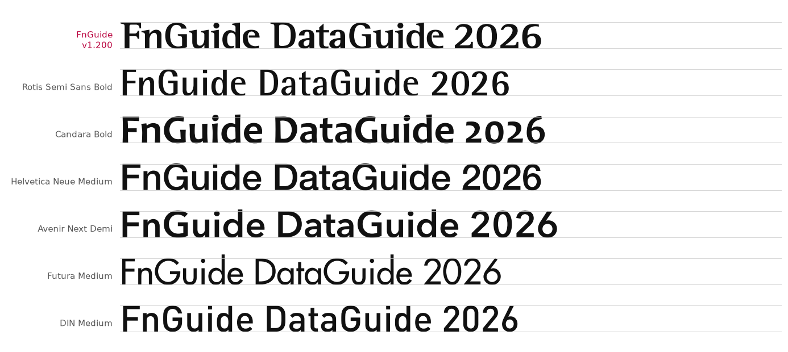
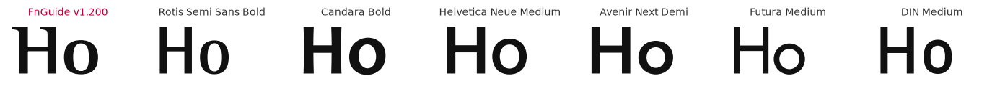
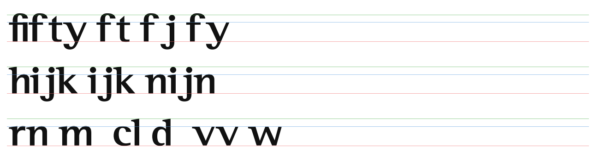
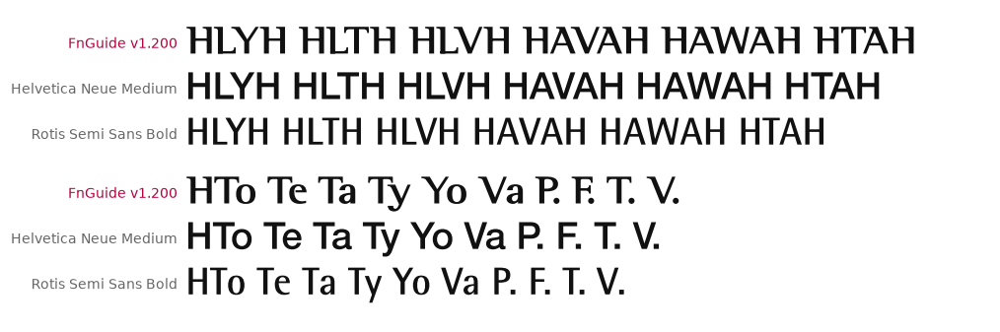
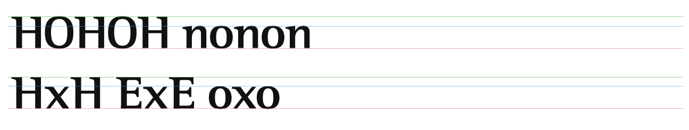
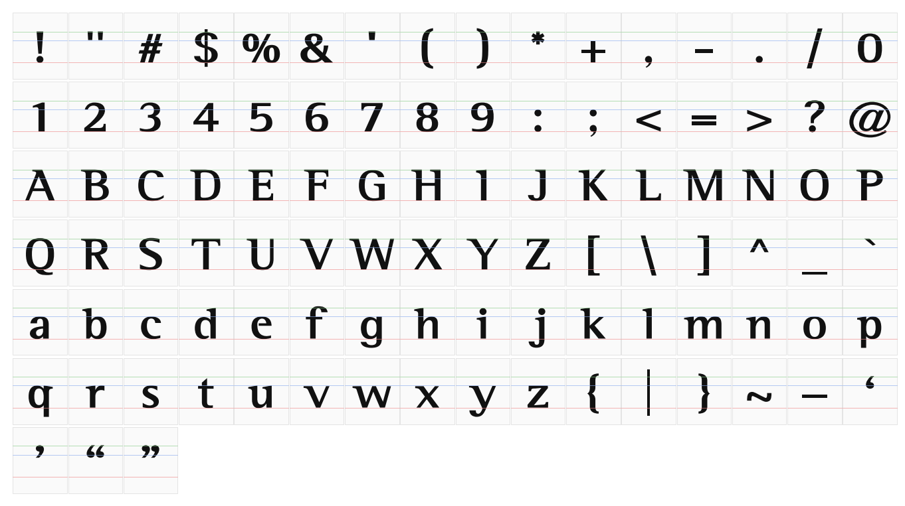

FnGuide Logotype v1.200전용서체 디자인 크리틱 보고서
이 보고서의 전문가 3인은 AI가 각 분야의 관점을 나눠 맡아 쓴 것입니다. 실제 디자이너의 검수를 대신하지 않습니다. 그래서 모든 의견에 실측 수치와 그림을 근거로 붙였습니다. 서체가 사내 전용이므로 이 문서는 내부에서만 봐 주세요.
1. 한눈에 보기
기본 비례와 굵기 균형은 같은 계열의 해외 서체(Rotis Semi Sans, Optima 계열)와 같은 수준입니다. 다만 사람이 마지막으로 손보는 단계가 덜 끝났습니다. 높이 정렬, f 주변 간격, 비슷한 글자 구분이 그 예입니다. 이것만 고치면 완성도가 한 단계 올라간다는 데 세 명 모두 동의했습니다.
전문가 총평
타이포그래픽 디자이너
장르 안에서 비례는 교과서 범위입니다. 소문자 높이 0.69, 기둥 비율 0.93이 그렇습니다. 남은 일은 높이 정렬, f 간격, 혼동 글자처럼 손으로 다듬는 마지막 단계입니다.
CI/BI 그래픽디자이너
흔한 산세리프와 바로 구별되는 개성이 있습니다. 고칠 때도 깃발 세리프와 굵기 차이라는 정체성은 지켜야 합니다. 공식 로고는 사람이 한 번 더 간격을 보고 고정하는 것이 좋습니다.
웹 디자이너
로고와 제목(16px 이상)으로는 훌륭합니다. 본문, 표, 숫자에 쓰려면 고정폭 숫자, ₩ 같은 기호, 최소 크기 규칙이 먼저 필요합니다.
2. 결론과 개선안
| 등급 | 무엇을 | 근거 |
|---|---|---|
| 수정 필요 | ① C·G 윗부분을 O 수준(약 711)으로 올림 | C·G 688 / H 700 / O 711 → C·G가 O보다 23 낮아 내려앉아 보임 |
| 수정 필요 | ② v·w·x·y 를 소문자 높이에 맞춤 | v·w·x 485, y 491 / n 500, z 498 |
| 수정 필요 | ③ o·c·e 위쪽에 넘침 주기 | 위쪽 넘침 0, 아래쪽만 −12 |
| 수정 필요 | ④ ft·fj 이어 쓰기 글자 추가, +보정(ft·fj·ty·rv) 재검토 | ft +43, fj +71 → soft·lift가 "sof t"로 보임 |
| 수정 필요 | ⑤ 파일 설정: Windows 위쪽 높이 값 850 → 870 이상, Regular 표시 값 넣기 | 가장 큰 글자 '|' 863 → Windows에서 잘릴 수 있음 |
| 개선 권장 | ⑥ 숫자 1 을 I·l 과 구분되게 (깃발을 길게) | Il1 이 "111"처럼 읽힘 |
| 개선 권장 | ⑦ o·e·c·a 위쪽 가로획을 조금 두껍게 (0.36 → 0.42 정도) | 대문자 O 0.46보다 소문자 대비가 셈, 11~13px에서 흐려짐 |
| 개선 권장 | ⑧ LY·LV 등 대각선 쌍의 간격 보정을 눈으로 확인하며 조정 | 여러 쌍이 똑같이 −257: 계산 최대치에 걸린 것으로 추측 |
| 개선 권장 | ⑨ 고정폭 숫자와 금융 기호(₩ · — … × °) 추가 | 숫자 폭 376~657로 제각각, ₩ 없음 |
| 개선 권장 | ⑩ woff2 파일 추가 | 지금은 woff(11.8KB)만 있음 |
| 개선 권장 | ⑪ 사용 규칙에 최소 크기와 한글 짝 서체 명시 | 서체에 한글 없음, 작은 크기에서 가로획이 흐려짐 |
| 유지 | 소문자 높이 비율, 기둥 굵기 비율, 깃발 세리프, 굵기 차이 성격, O/H 폭 비례 | 같은 계열 해외 서체와 같은 범위 |
3. 해외 서체와의 균형 비교
모든 서체의 대문자 높이를 똑같이 맞추고 비교했습니다. 같은 계열(획 끝이 벌어지고 굵기 차이가 있는 산세리프)인 Rotis Semi Sans가 가장 가까운 비교 대상입니다. 같은 계열의 대표격인 Optima는 이 컴퓨터에 없어 빠졌습니다.



| 항목 (대문자 높이 = 1000) | FnGuide | Rotis Semi Sans | Helvetica Neue | Avenir Next | DIN | 판단 |
|---|---|---|---|---|---|---|
| 소문자 높이 ÷ 대문자 높이 | 0.69 | 0.69 | 0.72 | 0.68 | 0.71 | 양호 |
| 내려간 획 ÷ 대문자 높이 | 0.30 | 0.31 | 0.27 | 0.34 | 0.29 | 양호 |
| 소문자 기둥 ÷ 대문자 기둥 | 0.93 | 0.92 | 0.91 | 0.95 | 0.95 | 양호 |
| H 가로획 ÷ 세로 기둥 | 0.50 | 0.60 | 0.86 | 0.85 | 0.89 | 성격 (유지) |
| O 위쪽 ÷ 옆 두께 | 0.46 | 0.51 | 0.81 | 0.81 | 0.89 | 성격 (유지) |
| o 위쪽 ÷ 옆 두께 | 0.36 | 0.38 | 0.79 | 0.80 | 0.89 | 개선 권장 ⑦ |
| O 폭 ÷ H 폭 | 0.97 | 1.00 | 1.05 | 1.15 | 0.93 | 유지 |
| O 넘침 (위 / 아래) | 16 / 17 | 16 / 16 | 24 / 24 | 25 / 25 | 8 / 8 | 양호 |
"넘침": O처럼 둥근 글자를 기준선보다 살짝 크게 그리는 보정입니다. 이렇게 해야 눈으로 볼 때 네모 글자(H)와 같은 크기로 느껴집니다. 해외 서체는 보통 대문자 높이의 1.5~2.5%를 넘칩니다.
4. 쟁점별 토론
A. 높이 정렬 — C·G, v·w·x·y, 둥근 소문자 수정 필요

B. f 다음 글자 간격 수정 필요


C. I · l · 1 구분 개선 권장

D. 얇은 가로획과 작은 크기 개선 권장

E. 대문자 대각선 쌍 간격 개선 권장

F. 숫자와 금융 기호 개선 권장
G. 파일 기술 설정 수정 필요 개선 권장
| 항목 | 지금 | 제안 |
|---|---|---|
| Windows용 위쪽 높이 값 | 850 (가장 큰 글자 '|' 863) | 870 이상 — 위끝 잘림 방지 수정 필요 |
| Regular 표시 값 | 비어 있음 | Regular로 표시 — 일부 프로그램의 굵기 목록 오류 방지 수정 필요 |
| 기본 줄 간격 | 1.05 (줄 사이 여백 0) | 그대로 두고, 웹에서는 줄 높이를 따로 지정 |
| 웹 파일 | woff 11.8KB | woff2 추가 — 추측인데 20~30% 더 작아질 것 개선 권장 |
H. 폭 비례 · 한글 짝 · 굵기 확장

5. 참고 자료


6. 결정해 주실 것
- "수정 필요" ①~⑤를 서체에 반영할지. 반영하면 v1.300이 되고, 로고타입을 다시 만들고 디자이너 확인을 받아야 합니다.
- 서체 사용 범위를 로고·제목 전용으로 둘지, 본문·숫자·표까지 넓힐지. 이에 따라 ⑥·⑨의 우선순위가 달라집니다.
- 사이트 "사용 규칙"에 최소 크기와 한글 짝 서체를 넣을지
7. 방법과 한계
- 수치는 서체 파일의 글자 윤곽을 직접 재어 얻었습니다. 대문자 높이 1000 기준이고, 높이 정렬은 서체 단위(1000 = 글자 한 칸)입니다.
- 간격은 글자 조판 엔진(하르프버즈)으로 실제로 조판한 결과입니다. 커닝(쌍별 간격 보정)과 이어 쓰기 글자가 모두 적용되어 있습니다.
- 작은 크기 그림은 힌팅(작은 크기용 픽셀 맞춤) 없이 회색 단계로 찍은 것입니다. 실제 화면은 운영체제·브라우저에 따라 조금 다릅니다.
- 비교 서체는 이 컴퓨터에 설치된 것으로 한정했습니다. Optima, Friz Quadrata는 빠졌습니다.
- 전문가 3인은 AI가 관점을 나눠 맡은 것이므로, 최종 판단은 실제 디자이너의 확인을 권합니다.
- 토론 전문: plan/phase-1/11-서체-v1.200-디자인-크리틱.md · 도구: scripts/font_critique/ · 수치: out/font-critique/metrics.json